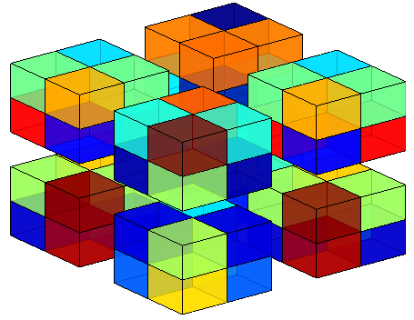
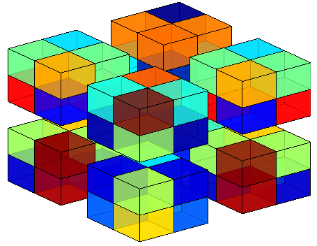
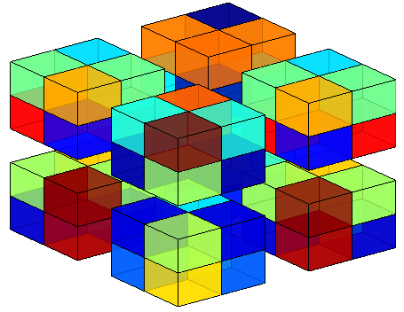
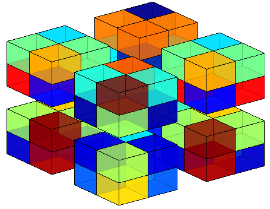

Software Packages
- tevis (tensor visualization) is a Matlab package for visualization of tensors, which facilitates the understanding of tensor-structured data and generates illustrative figures for tensor data methods. [Github]
 


 
